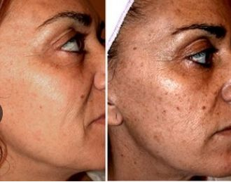

💆♀️ خدماتنا
- علاج حب الشباب
- إزالة آثار الحبوب
- جلسات تفتيح البشرة
- التقشير الكيميائي
- علاج الخطوط الرفيعة
- علاج الهالات السوداء
- جلسات الليزر
- علاج تساقط الشعر
- استخدام الميزوثيرابي
- جلسات تنظيف البشرة
- حقن الفيلر
الأسئلة الشائعة
لا، الجلسات غير مؤلمة وتتم تحت إشراف طبي.
تظهر النتائج بشكل تدريجي حسب نوع الخدمة والبشرة.
يتم تحديد العدد المناسب حسب الحالة بعد الكشف.
نادراً، وتكون مؤقتة مثل احمرار بسيط يزول خلال ساعات.
تتراوح ما بين 30 إلى 45 دقيقة.
نعم، لكن يحدد الطبيب النوع المناسب لكل بشرة.
تختلف من شخص لآخر ولكن غالبًا من 4 إلى 6 جلسات.
نعم، وتُجرى باستخدام أدوات معقمة وتحت إشراف طبي متخصص.
لأي أسئلة أخرى تواصل معنا على الواتساب.
نصائح من العيادة
- اشربي ماء كفاية يومياً للحفاظ على نضارة بشرتك.
- استخدمي واقي الشمس المناسب لبشرتك بشكل يومي.
- ابتعدي عن المنتجات القاسية اللي بتجفف بشرتك.
قبل وبعد
